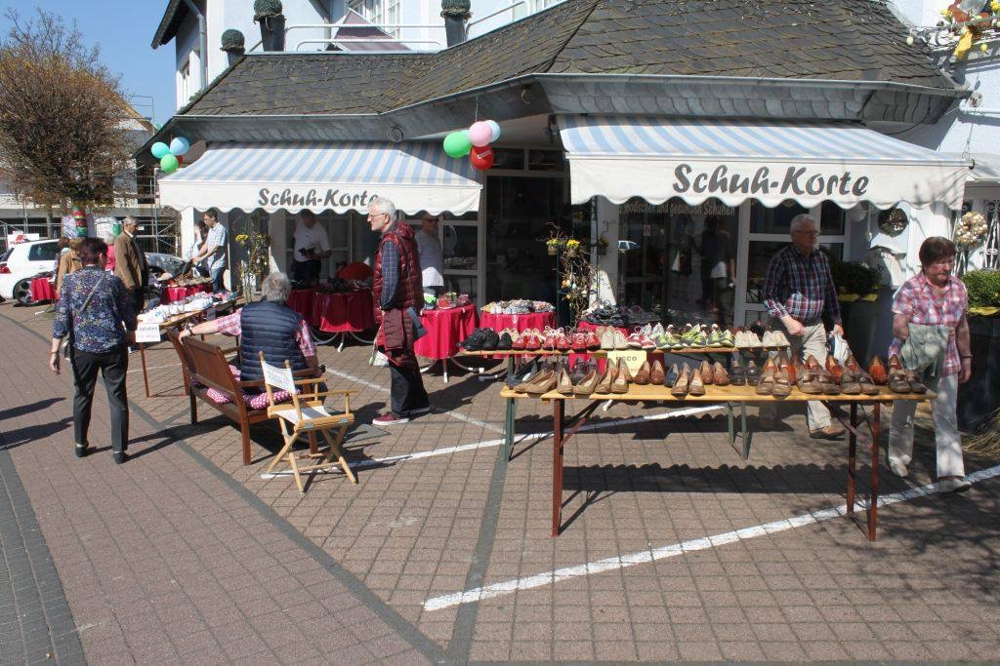

In den 1960er Jahren und auch noch einige Zeit danach waren Schuhe ein wertvoller Besitz. Die Einkünfte der meisten Familien waren begrenzt, deshalb musste jeder Kauf gut überlegt sein. Schuhe sollten möglichst viele Jahre halten. Meist besaß man nicht mehr als zwei Paar: eines für den Sommer und eines für den Winter. Waren Kinder aus ihren Schuhen „herausgewachsen“, wurden sie an jüngere Geschwister weitergegeben. Entsprechend sorgfältig ging man mit ihnen um. Samstags war Schuhputzen angesagt, und abgelaufene Absätze wurden selbstverständlich durch neue Lederabsätze ersetzt.
In unserer Nähe gab es damals drei Schuster: Gauer am unteren Markt, Bastian in der oberen und Korte in der unteren Hebegasse. Mussten Schuhe repariert werden, hatten wir keine festen Vorlieben. Man ging dorthin, wo die Reparatur möglichst schnell erledigt werden konnte.
Am liebsten ging ich allerdings zu Bastian. Er war freundlich und angenehm – ganz im Gegensatz zu Gauer, der mich hinter seiner Brille stets besonders kritisch musterte. Gauer war ein eher knorriger Kauz. Er sprach wenig und wirkte selten besonders herzlich. August Korte hingegen war in Ordnung. Er verstand sein Handwerk und saß meist in seiner Werkstatt rechts neben dem Verkaufsraum bzw. links vom Eingang zum Wohnhaus.
Korte verkaufte auch neue Schuhe, und das war für uns Kinder jedes Mal ein kleines Ereignis. Die Füße wurden sorgfältig vermessen, anschließend wurde anprobiert und „Schau gelaufen“. Drückte der Schuh vorne oder seitlich? War genügend Platz vorhanden, damit man noch hineinwachsen konnte? All das wurde ausführlich mit dem Verkaufspersonal besprochen, zu dem auch August´s Frau Helene gehörte.

Am schönsten aber waren die Lurchi-Hefte. Diese kleinen Bildgeschichten wurden von der Schuhfirma Salamander herausgegeben und den Kindern beim Schuhkauf kostenlos mitgegeben. Der Name passte perfekt, denn Lurchi war tatsächlich ein Salamander, der die verschiedensten Abenteuer bestand. Wir verschlangen diese Hefte regelrecht und freuten uns schon beim Lesen auf den nächsten Schuhkauf.
Keiner der alten Schuster ist geblieben, und auch das Schuhhaus Korte existiert längst nicht mehr. Mit dem Wandel der Zeit verschwanden nach und nach jene kleinen Geschäfte, in denen Dinge noch repariert, gepflegt und erhalten wurden. Schuhe wurden vom wertvollen Besitz zum schnell austauschbaren Gebrauchsgegenstand. Vielleicht ist es gerade deshalb, dass die Erinnerung an die alten Schuster und die Lurchi-Hefte bis heute etwas Besonderes geblieben ist.